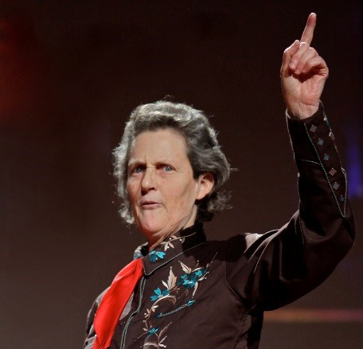
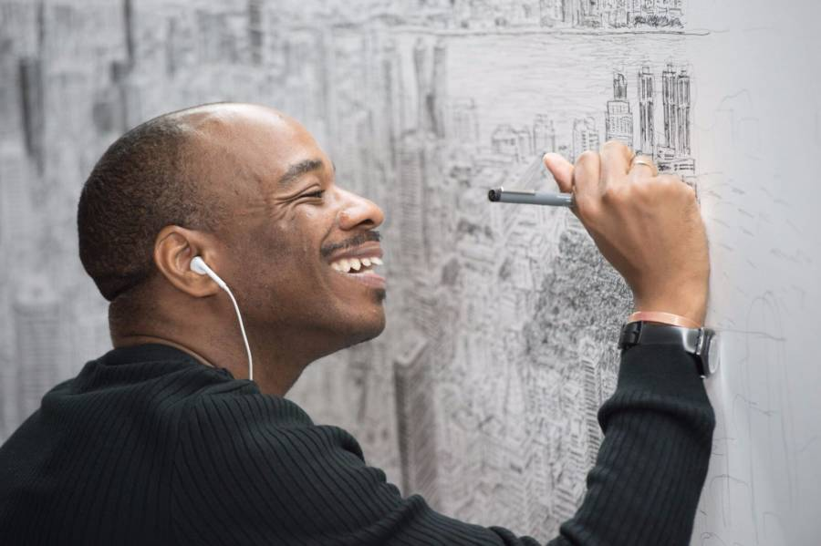

التوحد لا يمنع النجاح، فكل شخص لديه قدرات يمكنه أن يحقق بها شيئًا مميزًا

عالمة وأستاذة جامعية وكاتبة، ولها أبحاث وتصميمات في مجال التعامل مع الحيوانات ورعايتها، كما أنها من أبرز المتحدثين عن التوحد
كاتب ولغوي لديه قدرات مميزة في الأرقام واللغات. وفي عام 2004 تمكن من تلاوة 22,514 رقمًا عشريًا من العدد π من الذاكرة

فنان بريطاني مصاب بالتوحد، مشهور برسم مناظر المدن بتفاصيل دقيقة من الذاكرة، وحصل على وسام MBE تقديرًا لإسهاماته في الفن
كل شخص لديه قدرة مميزة، ومع الدعم والتشجيع يمكن أن تتحول هذه القدرة إلى إنجاز
❤
شكرًا لأنك كنت جزءًا من رحلتنا في آفاق